Subaru

Subaru (яп. スバル) — автомобилестроительный бренд, принадлежит компании Subaru Corporation. Объём производства в 2011 году составил 528 234 легковых и 52 027 коммерческих автомобилей.
История имени
Основатель и первый президент компании Fuji Heavy Industries Ltd., Кэндзи Кита, был настоящим энтузиастом автомобилестроения и принимал личное участие в создании первого прототипа пассажирского автомобиля Р-1 в 1954 году.
Когда P-1 был создан, Кита, считавший что японский автомобиль должен носить японское имя, объявил конкурс на лучшее название для P-1. Однако ни одно из конкурсных названий не устроило Кэндзи, и он, в итоге, придумал его сам.
Кэндзи Кита приобрёл у французской автомобильной корпорации Renault ряд чертежей и патентов, на основе которых и делались первые автомобили «Субару».
Слово «субару» (яп. 昴) — это японское название звёздного скопления Плеяды в созвездии Тельца. Около десятка его звёзд можно разглядеть на ночном небе невооружённым глазом, ещё около 250 — с помощью телескопа. Несмотря на то, что для записи названия «Плеяды» в Японии используется кандзи 昴, взятый под влиянием китайской научной традиции, исконно японское название скопления происходит от глагола субару (яп. 統る, «быть собранными вместе»). Для записи названия бренда компания не использует кандзи, ограничиваясь латиницей и катаканой. Бренд и его логотип также отсылают к другому, древнему японскому названию Плеяд — мицурабоси (яп. 六連星, «шесть звёзд»), намекая на шесть компаний, в результате слияния которых образовалась FHI.
Выпускаемые модели
360 (1958—1971)

Alcyone (1985—1991)
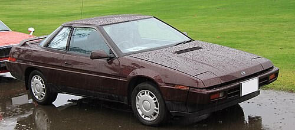
Alcyone SVX (1991—1997)
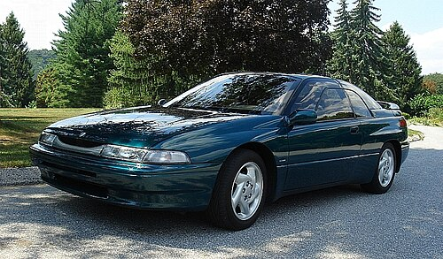
Ascent (с 2019)
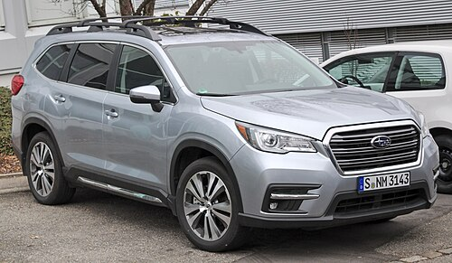
Baja (2003—2006)

BRAT (1978—1993)

BRZ (с 2011)
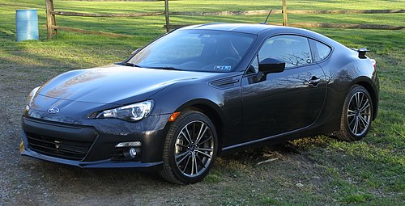
Domingo (1983—1998)

FF-1 Star (1970—1973)

FF-1 G (1971—1973)
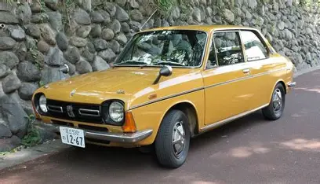
Exiga (с 2008)

Forester (с 1997)
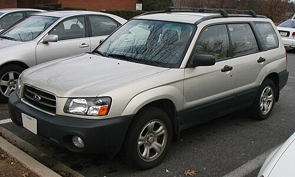
G3X Justy (с 2003)
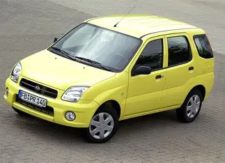
Impreza (с 1992)
Impreza
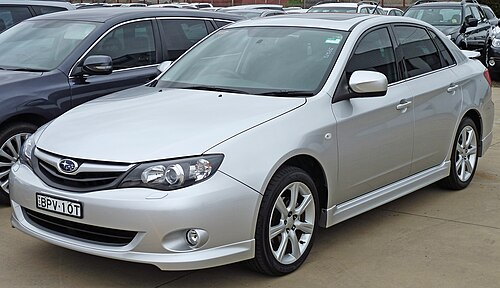
Legacy / Liberty (с 1989)
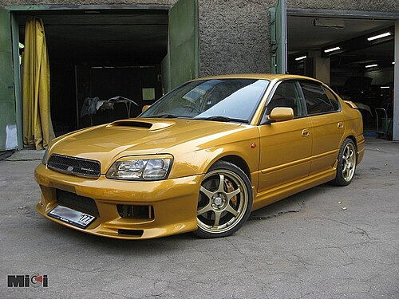
напоминает мне что то из NFS
Outback / Grand Wagon / Lancaster (с 1995)
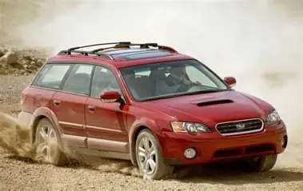
Leone (1971—1994)

Levorg (с 2014)

Pleo (с 1998)

R1 (2005—2010)
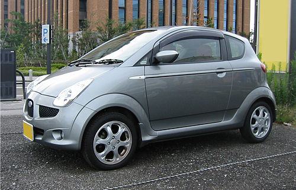
R2 (2003—2010)

Rex (1972—1992), (2023)

Sambar (с 1990)

Stella (с 2006)
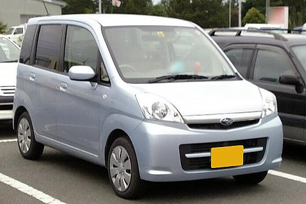
SVX (с 1991)
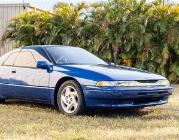
Traviq (2001—2004)

Tribeca (2005—2014)
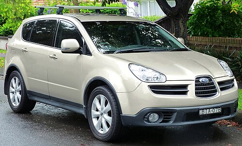
Vivio (1992—1998)

XV / Crosstrek (с 2011)
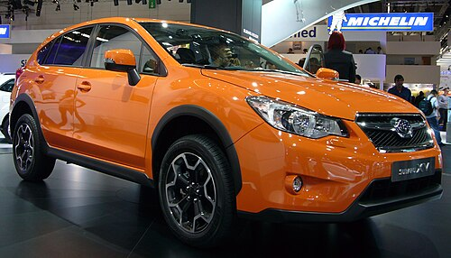
Solterra (2023)
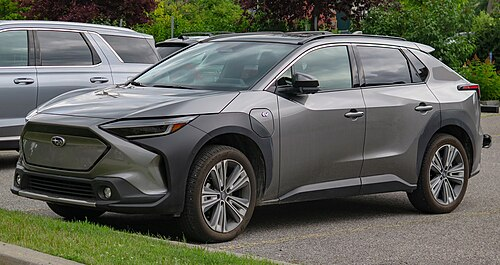
Это Toyota bZ4X кста
Trailseeker (2025)

Большинство производимых автомобилей имеют полный привод и оппозитные двигатели.